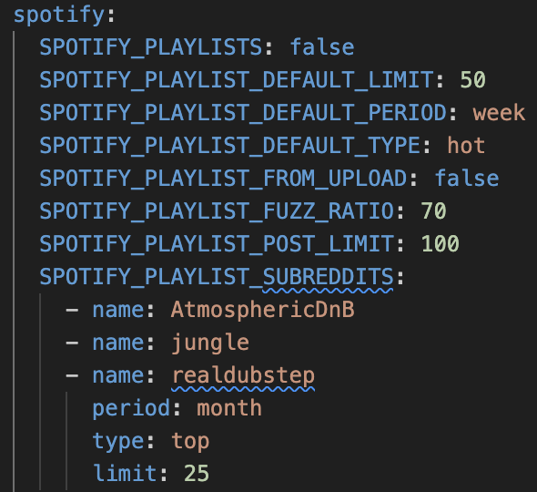

Create Spotify Playlists From Reddit Posts
In this guide you will learn how to automatically build Spotify playlists based on the titles of submissions made to subreddits.
Note that the efficacy of this tool is dependent on whether or not submissions are links to Spotify tracks and, if not, how strictly submission titles conform to a standard of artist name - track title or track title - artist name. See the note at the bottom regarding the potential for subreddit-specific title parsers.
Prerequisites
Why create Spotify playlists from Reddit posts?
The idea to create a Reddit --> Spotify track scraper came from the r/Techno playlist. I found this one to be a great way to gain exposure to new music and wanted to emulate it across other subreddits.
How it's done
- Configure the
spotify_playlist_subredditsoption (see the Configuration tutorial for more details) - Run the command
djtools --spotify-playlists - [optional] Setup a crontab to run this, for e.g., every morning at 8am
Example
In the example below, you can see a portion of config.yaml which shows all of the options relating to the --spotify-playlists feature.

The spotify_playlist_subreddits option is where you configure the subreddits from which you'd like to build Spotify playlists from. It accepts a list of SubredditConfig objects. The minimum attribute set required for each of the SubredditConfig objects is the name attribute which is a case-insenstive exact match of the subreddit. The other attributes are as follows:
limit[default=50]: the maximum number of tracks allowed in the playlist before the least recently added tracks are removedperiod[default=week]: the interval for which to pull Reddit submissions over{all, day, hour, month, week, year}type: [default=hot]: the sorting filter to apply for the subreddit{controversial, hot, new, rising, top}
Each of the above (name not included) has an associated SPOTIFY_PLAYLIST_DEFAULT_* option which will be applied in the absence of specification for any individual SubredditConfig object.
The remaining --spotify-playlists related options are as follows:
SPOTIFY_PLAYLIST_FUZZ_RATO[default=70]: the minimum required Levenshtein similarity between the parsed submission title and thetrack title - artist nameof a Spotify search results for it to be added to the playlistspotify_playlist_post_limit[default=100]: the maximum number of submissions results from a subreddit queryspotify_playlists[default=false]: the flag to trigger the execution of this feature
Once your options are configured as desired, you can run the following command to populate the playlists:
djtools --spotify-playlists
Note that only one result (the one with the highest Levenshtein similarity that is greater than or equal to spotify_playlist_fuzz_ratio) will be added to the playlist for each submission.
Also note that a naive submission title parser is used unanimously for all subreddits. In the future, it would be helpful if an abstract interface for submission title parsing was defined and implementations could be sub-classed and configured inside the individual SubredditConfig objects.